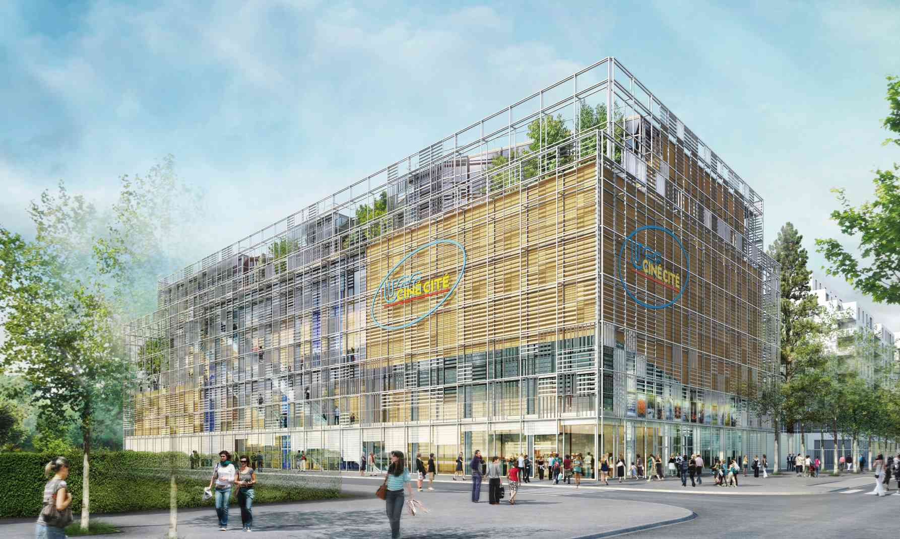
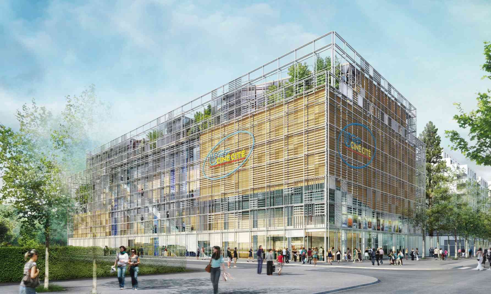

Survolez l'image et agrandissez/réduisez la vue à l'aide de la molette.
Survolez l'image et agrandissez/réduisez la vue à l'aide de la molette.
Budget: -
Surface: 10 000 m2 de SHON sur un terrain de 4 133 m2
Date début: 2011
Date fin: -
Maîtrise d'ouvrage: UGC
Co-traitant(s): bureau des paysages, mandataire Atelier A (Claude Chautant)
Description:
Véritable jalon entre Paris et la banlieue, le cinéma s’implante en bordure du périphérique au nord-est de Paris.
Ce nouveau pôle de centralité cinématographique destiné à accueillir un million d’entrées annuelles est au cœur
d’un quartier en intense renouvellement urbain. Le projet se constitue comme une petite ville avec ses rues, ses places et ses îlots, comme un paysage urbain intérieur ouvert sur la ville au dehors. Le bâtiment est ainsi conçu comme une lanterne magique qui reçoit les signaux de la ville environnante et émet les lumières de sa propre activité. A l’image d’une machine optique, la façade est composée d’ailettes en aluminium anodisé que la superposition et la juxtaposition rend changeante selon les moments de la journée, les usages et la position que chacun occupe dans le volume : une réponse simple et efficace pour réguler les aspects climatiques. Une double fonction qu’occupe à sa manière la toiture, terrasse technique plantée de sédum et d’une végétation arbustive.
A l’intérieur, les cinémas proposent un parcours au centre duquel se trouvent les salles et dans lequel le hall et
plus largement les espaces de distribution jouent un rôle déterminant.
Chaque niveau est une rue reliée aux autres
par des escaliers mécaniques. C’est un traveling, un mouvement qui mène de l’extérieur vers l’intérieur, de
la lumière naturelle à la pénombre des salles. La signalétique de l’accès aux salles, avec ses panneaux colorés
sur des enceintes de lattis de bois blond, fait écho aux adresses le long des rues.
Le spectateur entre dans les
salles par le haut, face à l’écran. Les salles sont des cocons aux tonalités sombres dans un camaïeu de bleus, des espaces feutrés et confortables. A la sortie des salles, une forêt intérieure plantée de grands métaséquoias accompagne le spectateur jusqu’au rez-de-chaussée. Le cinéma est un bâtiment actif, vivant au rythme de la succession des séances, du parcours des spectateurs dans les étages au spectacle de la ville.

{kind=link}
{kind=link}
{kind=link}